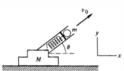
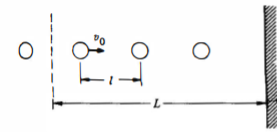

$$\textbf{f}_j = \frac{d\textbf{p}_j}{dt}$$
$$ \textbf{f}_j^{\text{int}}+\textbf{f}_j^{\text{ext}} = \frac{d\textbf{p}_j}{dt} $$
$$\textbf{F}_{\text{ext}}=\frac{d\textbf{P}}{dt}$$
Problem: A loaded spring gun, initially at rest on a horizontal frictionless surface, fires a marble at angle of elevation $\theta$. The mass of the gun is $M$, the mass of the marble is $m$, and the muzzle velocity of the marble is $v_o$. What is the final motion of the gun?

Absence of horizontal external forces yields:
$$\frac{dP_x}{dt}=0$$ Hence $P_x$ is conserved:
$$P_{x, \text{initial}}=P_{x, \text{final}}$$
After the marble has left the muzzle, the gun recoils with some speed $V_f$. The subtle point here is there is a change in momentum for the gun as well when the marble and the gun lose contact.
This means that the final horizontal speed of the marble relative to the gun is $v_o$, which means the final horizontal speed of the marble relative to a stationary observer would be $v_o\cos{\theta}-V_f$. Since the initial momentum is $0$. $$0=m(v_o\cos{\theta-V_f})-MV_f \Rightarrow V_f = \frac{mv_o\cos{\theta}}{M+m}$$
Problem: A 0.2 kg rubber ball falls and rebounds with a speed of 8 m/s, remaining in contact with the floor for $10^{-3} s$. We analyze the force exerted by the floor.
Since impulse $\int F dt = \Delta P$, the average force exerted by the floor is: $$ F_{\text{avg}} = \frac{3.2 \text{ kg·m/s}}{10^{-3} \text{ s}} = 3200 \text{ N} $$
We previously ignored gravity. The total force includes: $$ F = F_{\text{floor}} + F_{\text{grav}} $$ Since $$ F_{\text{grav}} = -Mgk $$, the impulse equation becomes: $$ \int F_{\text{floor}} dt = 3.2 \text{ kg·m/s} + \int_{0}^{10^{-3}} (-Mg) dt $$ Impulse due to gravity: $$ \int_{0}^{10^{-3}} (-0.2 \times 9.8) dt = -1.96 \times 10^{-3} \text{ kg·m/s} $$ This is negligible (less than 0.1% of the total impulse), confirming that contact forces during short collisions are dominant.
A water stream pushes against a surface due to the momentum it transfers. If there is no counteracting force, the transferred momentum can cause motion.
Model the stream as small uniform droplets of mass $m$, traveling at velocity $v_0$ and spaced $l$ apart. Assume they hit a surface without rebounding.
The impulse on each droplet is: $$ I_{\text{droplet}} = \int_{\text{collision}} F dt = \Delta p = m(v_f - v_0) = -m v_0 $$
By Newton’s third law, the impulse on the hand is:
$$ I_{\text{hand}} = m v_0 $$
indicating force in the direction of the droplet’s velocity.
If multiple droplets hit per second, the average force felt is: $$ F_{\text{avg}} T = \int_{\text{collision}} F dt $$
Since $T = l/v_0$, we get: $$ F_{\text{avg}} = \frac{m v_0}{T} = \frac{m}{l} v_0^2 $$
For a stream section of length $L$: - The number of droplets: $L/l$ - Total momentum: $\Delta p = (L/l) m v_0$ - Time for these to strike: $\Delta t = L/v_0$

For a fluid stream moving at $v$, define mass per unit length as $\lambda = m/l$. The momentum flux is: $$ \frac{dp}{dt} = \lambda v^2 $$ If the stream stops upon impact, the force on the surface is: $$ F = \lambda v^2 $$
$$\textbf{R}=\frac{1}{M}\iint (x\hat{\textbf{i}}+y\hat{\textbf{j}})\sigma \cdot dx dy$$ $$M=\int_0^b \int^a_0 \sigma \cdot dxdy = \int_0^b \int^a_0 \sigma_o \frac{xy}{ab} \cdot dxdy = \int_0^b \sigma_o \frac{ay}{2b} \cdot dy = \frac{1}{4}\sigma_o ab$$ The $x$ component of $\textbf{R}$ is: $$X=\frac{1}{M}\int_0^b \int_0^a x\sigma_o \frac{xy}{ab} \cdot dx dy = \frac{1}{M} \int_0^b \frac{\sigma_o ya^2}{3b} \cdot dy = \frac{4}{\sigma_o ab} \frac{\sigma_o a^2 b}{6} = \frac{2}{3}a$$ And $Y=2/3 b$.